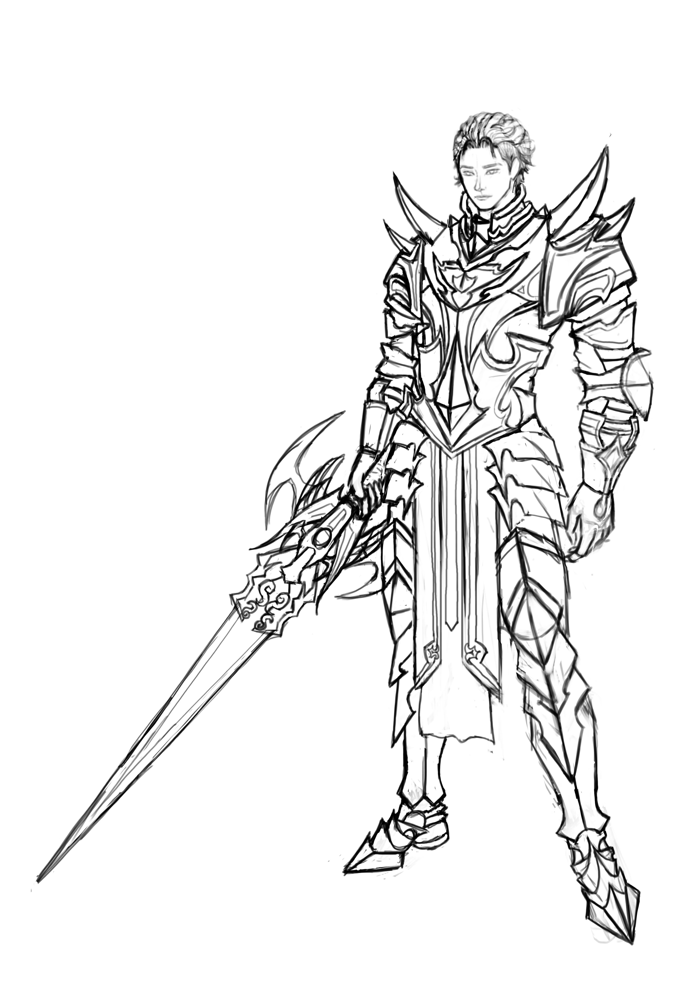
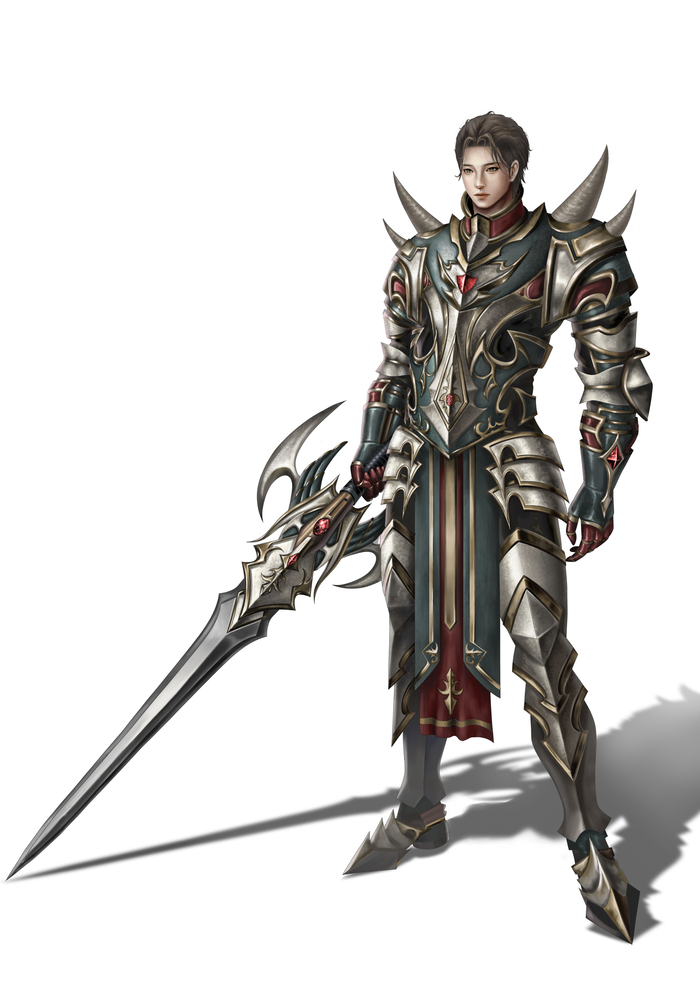
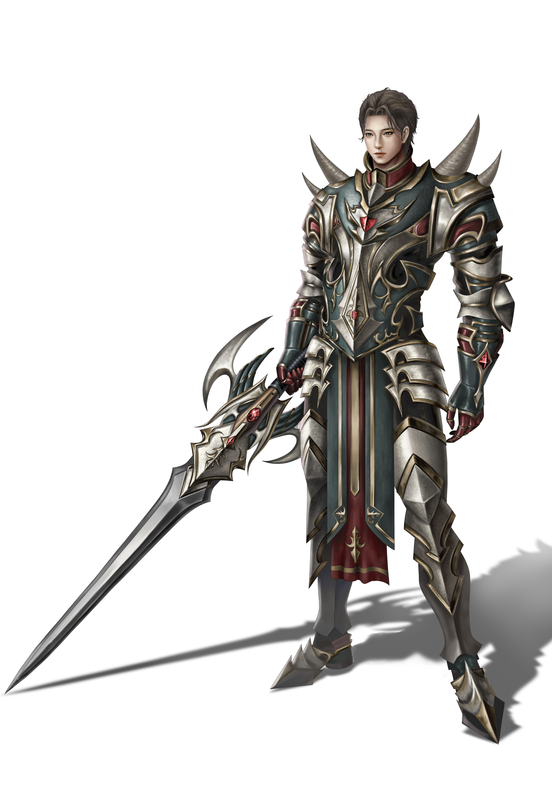
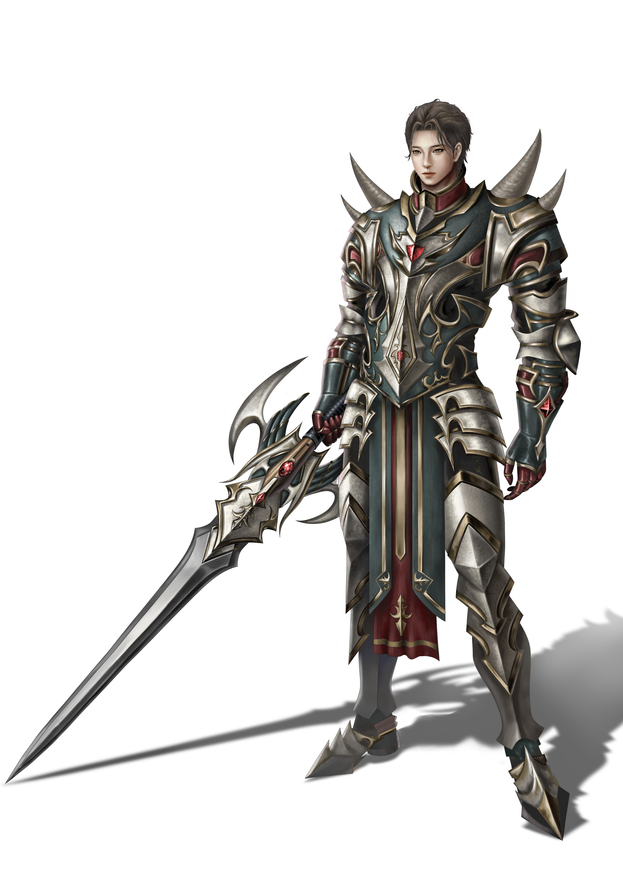
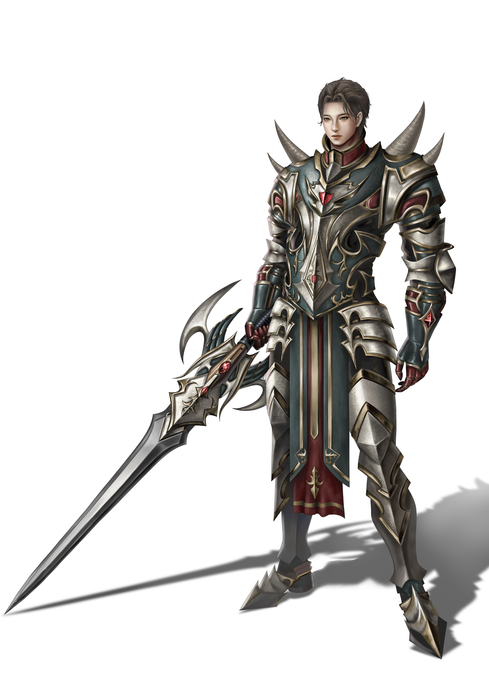

나이트
한학기를 끝내고 휴학 후 게임 원화를 배웠었다. 입시 미술 그림만 그리다
처음 배워보는 분야라서 신나게 그렸었던 기사. 나의 첫 포트폴리오 그림.

 


나이트
한학기를 끝내고 휴학 후 게임 원화를 배웠었다. 입시 미술 그림만 그리다
처음 배워보는 분야라서 신나게 그렸었던 기사. 나의 첫 포트폴리오 그림.

얼굴이 궁금한 로봇
친구와 만화카페에 놀러가 에반게리온 만화책을 보다 나의 에바를 그려보고
싶어 그렸었던 로봇 팔. 팔을 그리며 얼굴을 어떻게 구상할까 고민하는게 즐거웠다.
오토바이를 잘 알진 못하지만 오토바이의 복잡한 구조를 따라그리는 것은 좋아한다.
내가 좋아하는 메카닉한 느낌을 섞어 더 밀도있는 오토바이를 그려보고 싶었다.
그림 조각을 모아 퍼즐을 완성 해보세요
총도 오토바이와 같은 맥락으로 복잡스러운 외형이 좋다.
어디에 쓸 수 있을진 모르겠지만 세상에서 제일 무거운 총 일듯 하다.


아직 이름을 정하지 못한 무서운 용.
나의 최애 애니메이션인 '센과 치히로의 행방불명'
의 주인공인 하쿠를 생각하며 그려 본 용의 얼굴.